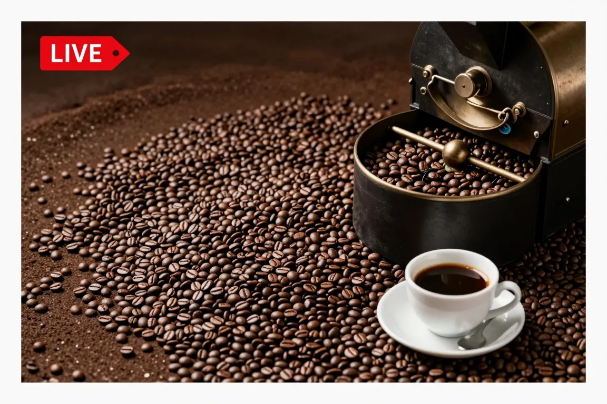

Рамка вокруг живой игры или камеры: слот фейскама, панель чата, окно оповещений и полоса с именем. Неоновые края и анимированные панели показывают, что идёт эфир.

Главная идея
Живому шоу нужна аппаратная на экране: рамка держит каждый живой сигнал в постоянном слоте, и зритель всегда знает, куда смотреть.
Принципы дизайна
Делите кадр 1920x1080 на постоянные слоты: игра 1440x810, фейскам 360x270, чат 360x540 и полоса 1920x80.
Обрамляйте каждый слот линией 2px цвета акцента и срезайте углы под 45° на 12px.
Всегда держите метку LIVE с пульсирующей точкой 12px в левом верхнем углу.
Задавайте окна оповещений 480x120 с выездом 300ms и удержанием 5 с.
Показывайте последнего подписчика, донат и спонсора мелкими моноширинными подписями 14–18px.
Берите тёмный фон (#0E0E12) с одним неоновым акцентом (#9146FF или #00F0A0) и вторым цветом только для оповещений.
Оставляйте слот игры свободным от накладок, кроме окна оповещений и метки LIVE.